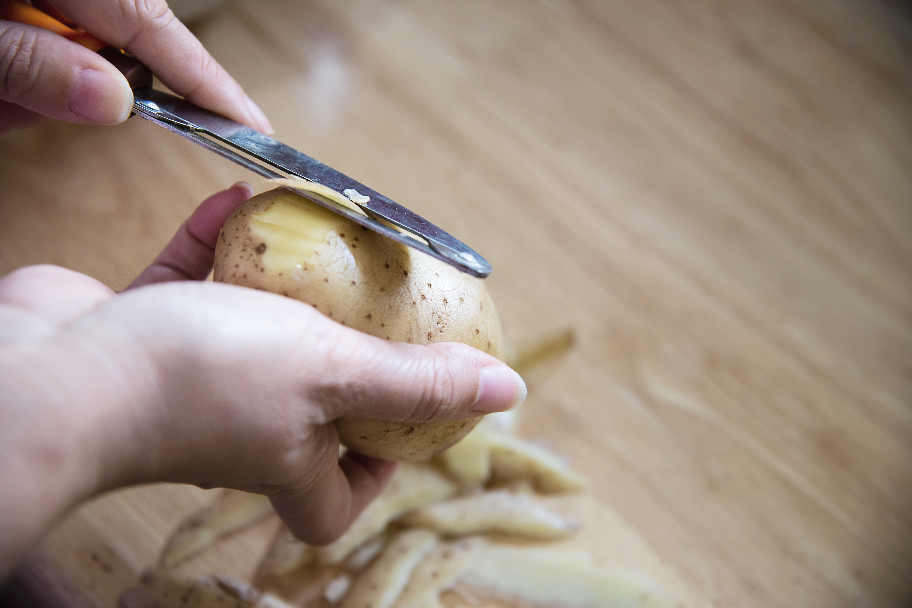

Tortilla de patatas
Ingredientes:
- 4 patatas.

- 5 huevos.

- Aceite de oliva virgen.

- Sal

Pasos a seguir:
- Prepara las patatas
- Pela las patatas en rodajas finas.

- Frie las patatas
- Calienta el aciete de oliva en una sarten.
- Frie las patatas durante 10-15 minutos.
- Cuando las patatas están listas, sacalas.
- Bate los huevos
- En un bol, bate los huevos y pon un poco de sal.
- Añade las patatas a los huevos y mezcla.

- Cocina la tortilla
- En la misma sarten, pon la mezcla que has hehco.
- Cocina la mezcla durante 5-10 minutos
- Da la vuelta a la tortilla y cocinala durante 5-10 minutos más.
- Sirve y disfruta
- Pon la tortilla en un plato, deja que se enfrie, y disfruta de tu tortilla.